TECH RWT Discovery: Science और Technology आसान हिंदी में
TECH RWT Discovery पर विज्ञान और तकनीक की खबरें और गहरी पड़तालें आसान हिंदी में मिलती हैं। हर लेख के अंत में स्रोत दिए जाते हैं और कठिन शब्द सरल भाषा में समझाए जाते हैं। ताज़ा लेख नीचे देखिए, या सीधे किसी विषय पर जाइए: Science, Space & ISRO, Technology & Future Tech, Environment और Innovation। पूरी सूची के लिए सभी लेख देखिए।
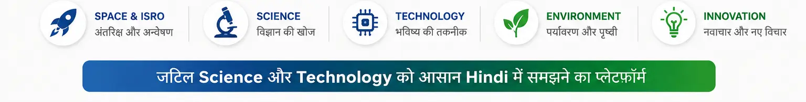
नवीनतम प्रकाशन (Latest Articles)
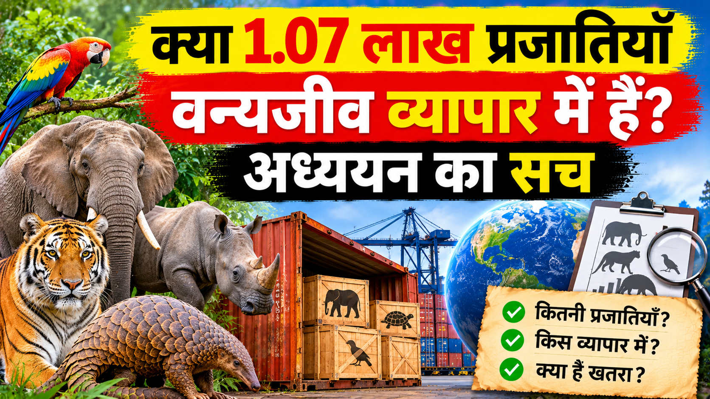
क्या 1.07 लाख प्रजातियाँ वन्यजीव व्यापार में हैं? अध्ययन का सच
Science Advances के अध्ययन के अनुसार 1,07,356 प्रजातियाँ वन्यजीव व्यापार में हैं, पुराने अनुमान से दोगुनी। सवाल-जवाब में सच, आँकड़ों की कमी और भारत का पहलू।
पूरा लेख पढ़ें →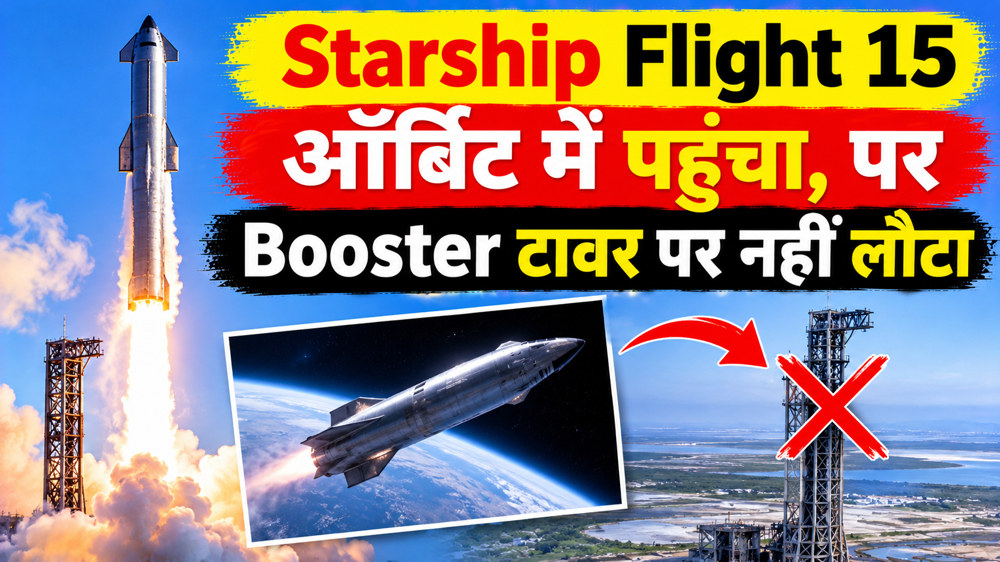
Starship Flight 15 ऑर्बिट में पहुंचा, पर Booster टावर पर नहीं लौटा
Starship Flight 15 में Ship 42 ऑर्बिट पहुंचा और 26 Starlink V3 छोड़े, पर Booster 22 टावर पर नहीं पकड़ा गया। चार भ्रम, IST की समय-तालिका और भारत का पहलू।
पूरा लेख पढ़ें →
करीब 24 घंटे ठप Microsoft 365: कंपनी के अनुसार वजह अपग्रेड, हमला नहीं
Microsoft के अनुसार Outlook, Teams और Copilot का ठप होना साइबर हमला या AI नहीं, नेटवर्क अपग्रेड की चूक थी। तीन बयानों की तुलना, भारतीय घड़ी का हिसाब और एयरलाइनों पर असर।
पूरा लेख पढ़ें →COP31: जलवायु वित्त वर्क प्रोग्राम अलग एजेंडा बना, EU की आपत्ति पर
COP31 में जलवायु वित्त कार्य कार्यक्रम अलग एजेंडा बना, पर यह फंड नहीं, दो साल का चर्चा-मंच है। इसके चरण, EU की आपत्ति, पक्षों की माँगें और भारत के लिए 10 गुना का फ़ासला।
पूरा लेख पढ़ें →बिना चिप बेचे Fractile $7 अरब की कैसे बनी?
ब्रिटेन की Fractile ने 11 नवंबर 2026 को $720 मिलियन का Series C जुटाया और मूल्यांकन $7 अरब बताया गया। मई से तुलना, मेमोरी की अड़चन, दावों की सीमा और भारत का पहलू।
पूरा लेख पढ़ें →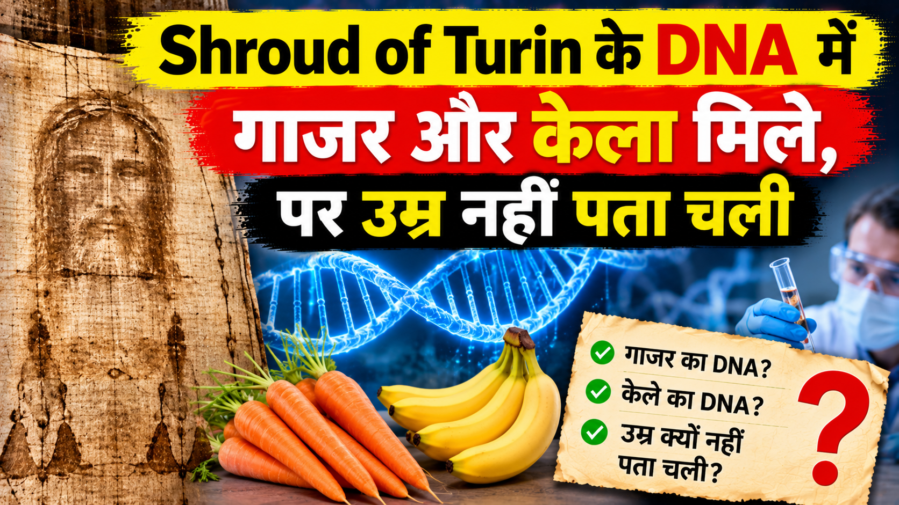
Shroud of Turin के DNA में गाजर और केला मिले, पर उम्र नहीं पता चली
Scientific Reports की स्टडी ने Shroud of Turin के 1978 नमूनों में इंसानी वंश, जीवाणु, गाजर-केला और लाल मूँगे का DNA पाया, पर उम्र पर फ़ैसला नहीं। 1988 और 2015 से तुलना, भारत वाली सुर्खी।
पूरा लेख पढ़ें →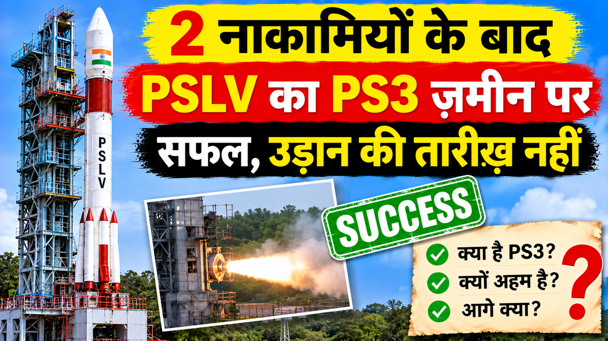
2 नाकामियों के बाद PSLV का PS3 ज़मीन पर सफल, उड़ान की तारीख़ नहीं
ISRO ने 12 नवंबर 2026 को PSLV के तीसरे चरण (PS3) का ज़मीनी परीक्षण सफल बताया। नोज़ल और सीलिंग में क्या बदला, भारत के उपग्रहों पर असर और अगली उड़ान का सवाल।
पूरा लेख पढ़ें →Danfoss कंट्रोलर पर हमला: यूरोप के करीब 100 स्टोर के फ्रीज़र गर्म
2 नवंबर को यूरोप के करीब 100 स्टोर के फ्रीज़र दूर से गर्म किए गए। पुराने Danfoss कंट्रोलर, दो लहरों की तालिका, हमलावरों पर अनिश्चितता और भारत के कोल्ड-चेन का हिसाब।
पूरा लेख पढ़ें →Gemini Robotics 2.5: Mercedes में 96%, पर ट्रायल गिनती नहीं बताई
DeepMind के Gemini Robotics 2.5 ने Mercedes-Benz की चालू लाइनों पर 96% सफलता का दावा किया, पर ट्रायल गिनती और सफलता की परिभाषा नहीं दी। चार भ्रम, तालिका और भारत का पहलू।
पूरा लेख पढ़ें →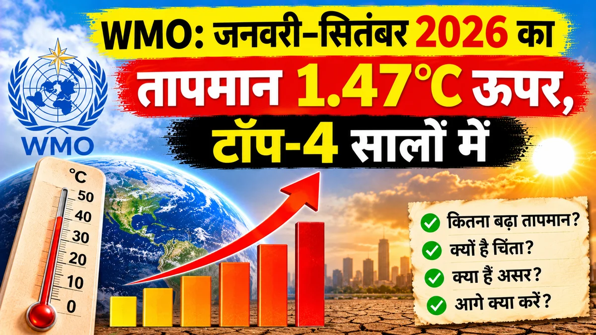
WMO: जनवरी–सितंबर 2026 का तापमान 1.47°C ऊपर, टॉप-4 सालों में
WMO की State of the Climate Update 2026 के अनुसार जनवरी–सितंबर का तापमान 1.47°C ऊपर रहा। 2023–2025 से तालिका में तुलना, नौ महीनों की सीमा और भारत का हिसाब।
पूरा लेख पढ़ें →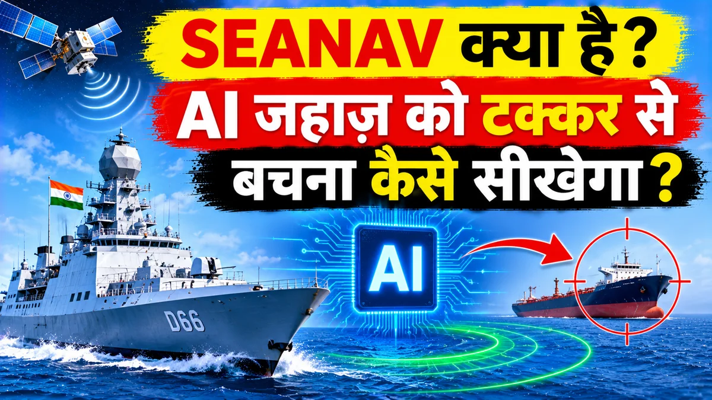
SEANAV क्या है? AI जहाज़ को टक्कर से बचना कैसे सीखेगा?
IIT मद्रास के SEANAV में जहाज़, सेंसर और लहरें वर्चुअल दुनिया में चलती हैं। छह कदमों में जानिए यह कैसे काम करता है, अभी क्या सिद्ध हुआ और क्या बाकी है।
पूरा लेख पढ़ें →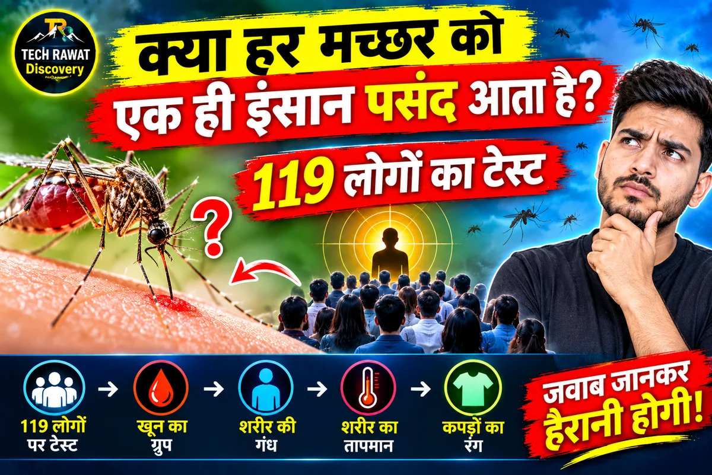
क्या हर मच्छर को एक ही इंसान पसंद आता है? 119 लोगों का टेस्ट
FIU के iScience अध्ययन में 119 लोगों पर तीन मच्छर प्रजातियाँ आज़माई गईं और कोई एक व्यक्ति तीनों को पसंद नहीं आया। गंध, बैक्टीरिया, भारत का मतलब और सीमाएँ।
पूरा लेख पढ़ें →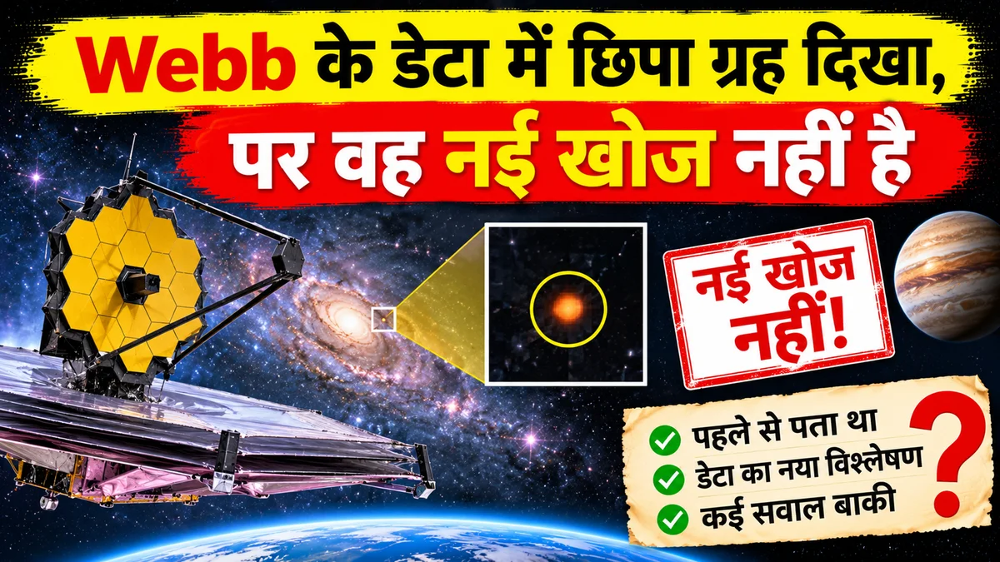
Webb के डेटा में छिपा ग्रह दिखा, पर वह नई खोज नहीं है
Northwestern की FLIP विधि ने James Webb के पुराने डेटा में 51 Eridani b को उभारा। डिजिटल ट्विन कैसे काम करता है, 2 से 15 गुना का आधार क्या है और भारत के लिए मतलब क्या है।
पूरा लेख पढ़ें →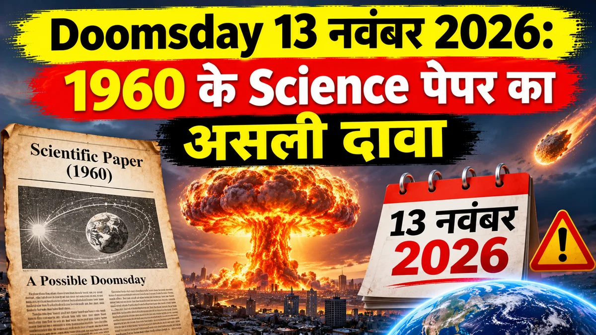
Doomsday 13 नवंबर 2026: 1960 के Science पेपर का असली दावा
1960 के Science पेपर में आबादी का गणित 13 नवंबर 2026 पर 'अनंत' होता था। यह दुनिया के अंत की भविष्यवाणी नहीं थी। पेपर का सूत्र, चार भ्रम और भारत का हिसाब।
पूरा लेख पढ़ें →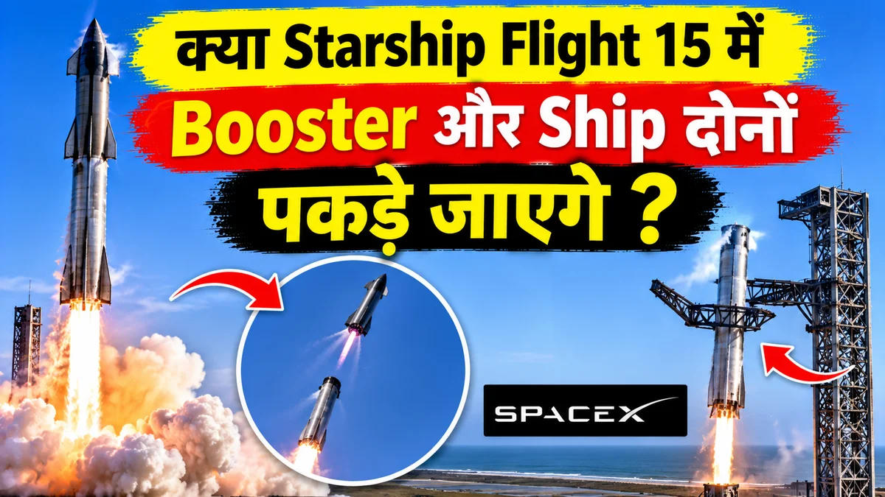
क्या Starship Flight 15 में Booster और Ship दोनों पकड़े जाएंगे?
SpaceX की Flight 15 में पहली बार Super Heavy और Starship को एक ही टावर पर पकड़ने की कोशिश होगी। Flight 14 से तुलना, 22 घंटे की योजना और ISRO के Pushpak-Soorya से फ़र्क।
पूरा लेख पढ़ें →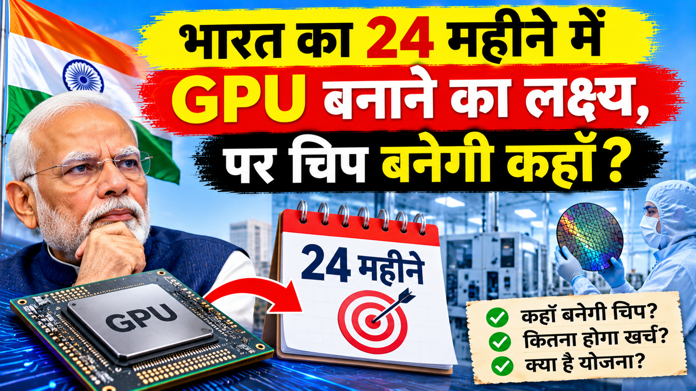
भारत का 24 महीने में GPU बनाने का लक्ष्य, पर चिप बनेगी कहाँ?
MeitY ने करीब 24 महीने में स्वदेशी GPU का लक्ष्य रखा है। चिप बनने के छह कदम, हर कदम पर भारत की रिपोर्ट की गई स्थिति और Dholera फ़ैब से जुड़ा बड़ा सवाल।
पूरा लेख पढ़ें →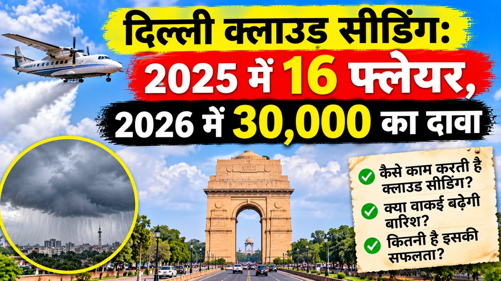
दिल्ली क्लाउड सीडिंग: 2025 में 16 फ्लेयर, 2026 में 30,000 का दावा
2025 में दिल्ली में 16 फ्लेयर दागे गए, पर बारिश दर्ज नहीं हुई। 2026 के ट्रायल की खबर सिर्फ़ सरकारी सूत्रों से है। जानिए दोनों साल में क्या बदला और क्या अब भी अज्ञात है।
पूरा लेख पढ़ें →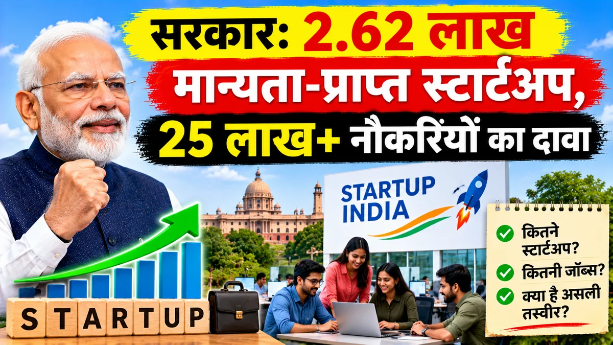
सरकार: 2.62 लाख मान्यता-प्राप्त स्टार्टअप, 25 लाख+ नौकरियों का दावा
9 नवंबर 2026 के बयान में 2.62 लाख मान्यता-प्राप्त स्टार्टअप और 25 लाख+ नौकरियां बताई गईं। मान्यता, रोज़गार और फंडिंग को साथ रखकर भारत के लिए मतलब समझिए।
पूरा लेख पढ़ें →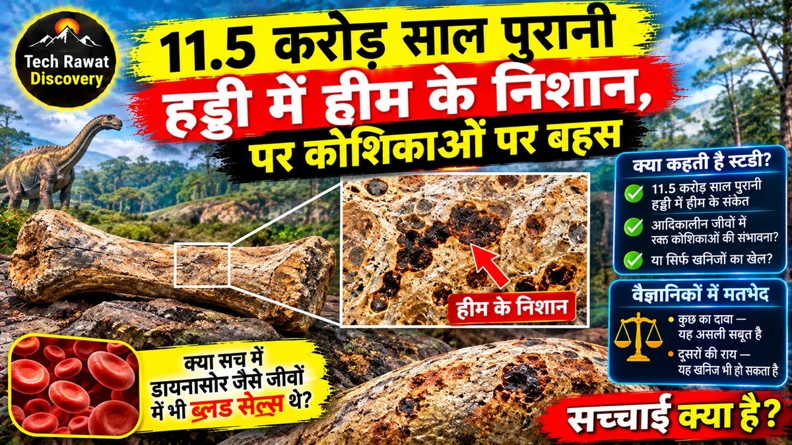
11.5 करोड़ साल पुरानी हड्डी में हीम के निशान, पर कोशिकाओं पर बहस
PNAS में छपे अध्ययन में ब्राज़ील के थेरोपॉड Aratasaurus की 11.5 करोड़ साल पुरानी हड्डी में हीम के निशान मिले। छह कदमों में जाँच, एक विशेषज्ञ की असहमति और भारत का पहलू।
पूरा लेख पढ़ें →OpenAI के अनुसार GPT-6 Cyber ने ExploitGym में 48.5% पाया
OpenAI ने GPT-6 Cyber चुने हुए ग्राहकों के लिए जारी किया। पहले बनाम अब की तुलना, ExploitGym में 48.5%, Firefox-Linux के नमूने और भारत के लिए CERT-In की 12 घंटे की घड़ी।
पूरा लेख पढ़ें →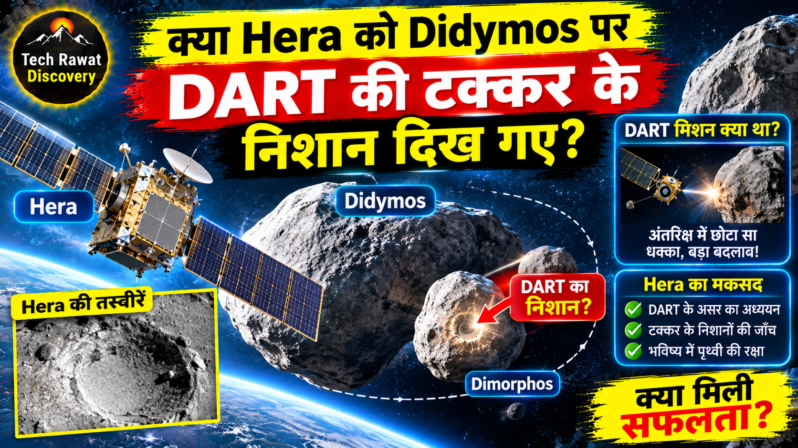
क्या Hera को Didymos पर DART की टक्कर के निशान दिख गए?
ESA के Hera यान ने 60 किमी से Didymos की छिपी तरफ़ की पहली क्लोज़-अप तस्वीर भेजी। 18 अक्टूबर की तस्वीर से तुलना, DART की टक्कर का हिसाब और भारत के NETRA व Apophis का पहलू।
पूरा लेख पढ़ें →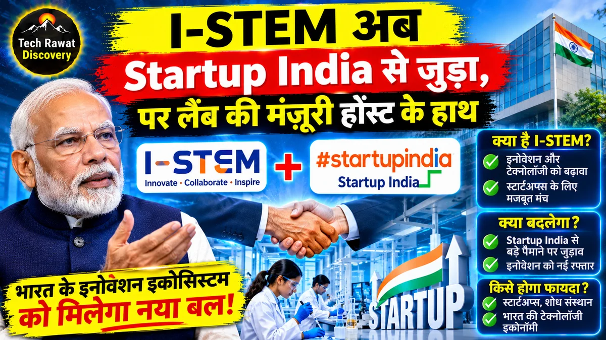
I-STEM अब Startup India से जुड़ा, पर लैब की मंज़ूरी होस्ट के हाथ
6 नवंबर 2026 को Startup India पोर्टल I-STEM से जुड़ा, जिसमें 31,540 सरकारी उपकरण सूचीबद्ध हैं। जानिए स्टार्टअप को क्या मिलेगा, एक-तिहाई प्रतिपूर्ति का नियम और जो अभी तय नहीं।
पूरा लेख पढ़ें →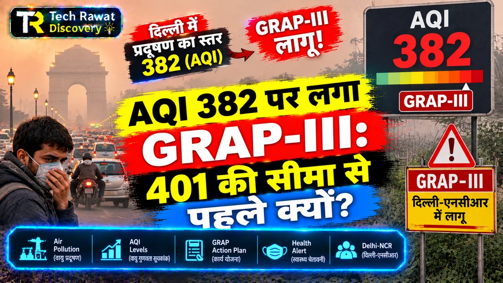
AQI 382 पर लगा GRAP-III: 401 की सीमा से पहले क्यों?
CAQM ने 6 नवंबर 2026 को AQI 382 पर ही GRAP Stage III लगाया, जबकि सीमा 401 है। फ़ैसला पूर्वानुमान पर टिका था। क्या बंद हुआ, सुप्रीम कोर्ट ने क्या कहा और दीवाली तक क्या देखें।
पूरा लेख पढ़ें →$115 अरब में Marvell-Lumentum सौदा: तांबे से रोशनी की ओर दांव
Marvell ने Lumentum को $115 अरब के शेयर-सौदे में खरीदने की घोषणा की। तांबा बनाम ऑप्टिकल की तालिका, Nvidia के CPO दावे और भारत के silicon photonics प्रयास।
पूरा लेख पढ़ें →Qualcomm ने शंघाई में पहली बार दिखाया 6G टर्मिनल प्रोटोटाइप
Qualcomm के 6G टर्मिनल प्रोटोटाइप का शंघाई में पहला सार्वजनिक प्रदर्शन हुआ। छह कदमों में काम करने का तरीका, चार प्रयोगों की तुलना और भारत के 6 GHz बैंड का सवाल।
पूरा लेख पढ़ें →क्या अनुकूलन फंड तीन गुना होने पर भी पूरी पड़ेगी ज़रूरत?
UNEP की Adaptation Gap Report 2026 के अनुसार तीन गुना बढ़ने पर भी अनुकूलन वित्त ज़रूरत का 20-29% ही पूरा करेगा। 2019 से 2024 के आंकड़े, ज़मीन तक पहुंच और भारत का हिसाब।
पूरा लेख पढ़ें →हरे पटाखों को छूट मिली, पर 'हरा' का मतलब प्रदूषण-मुक्त नहीं
सुप्रीम कोर्ट ने दिल्ली-NCR में 7-8 नवंबर को प्रमाणित हरे पटाखों की छूट दी है। NEERI का 30% वाला पैमाना क्या है, किन शर्तों पर छूट है और 'हरा' का असली मतलब क्या है।
पूरा लेख पढ़ें →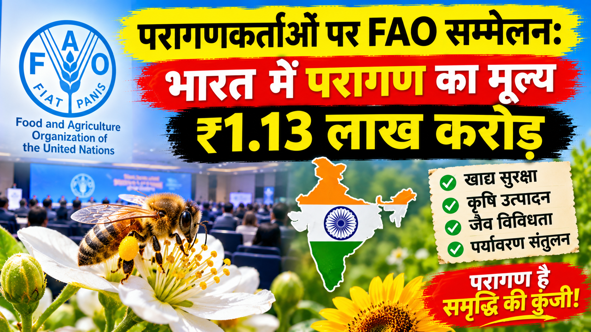
परागणकर्ताओं पर FAO सम्मेलन: भारत में परागण का मूल्य ₹1.13 लाख करोड़
FAO ने 5-6 नवंबर को रोम में Global Pollinator Conference बुलाया। भारत में परागण का सालाना मूल्य करीब ₹1.13 लाख करोड़ आंका गया था। सरसों, सब्ज़ी और फल के हिसाब के साथ पूरी तस्वीर।
पूरा लेख पढ़ें →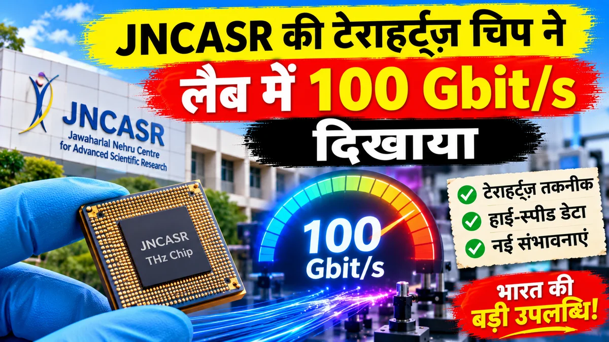
JNCASR की टेराहर्ट्ज़ चिप ने लैब में 100 Gbit/s दिखाया
JNCASR की सिलिकॉन चिप में टेराहर्ट्ज़ तरंगें बैरियर के आर-पार निकलीं और डेटा 100 Gbit/s तक गया। 2020 की चिप से तुलना, तीन डिवाइस के नतीजे, भारत का पहलू और जो अभी तय नहीं।
पूरा लेख पढ़ें →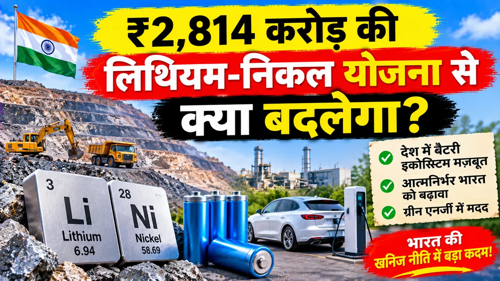
₹2,814 करोड़ की लिथियम-निकल योजना से क्या बदलेगा?
कैबिनेट ने लिथियम-निकल प्रोसेसिंग के लिए ₹2,814 करोड़ मंज़ूर किए। चार प्लांट, 30% सब्सिडी और बोली की शर्तें क्या हैं, और योजना क्या नहीं करती, यह जानिए।
पूरा लेख पढ़ें →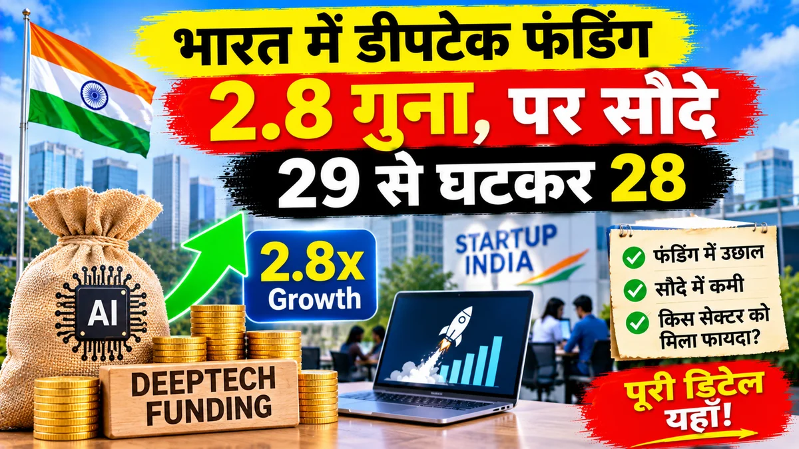
भारत में डीपटेक फंडिंग 2.8 गुना, पर सौदे 29 से घटकर 28
Inc42 के अनुसार Q3 2026 में भारत के डीपटेक स्टार्टअप्स ने 28 सौदों में $290 मिलियन जुटाए, पिछले साल से 2.8 गुना। तालिका में तुलना, Pixxel हटाकर हिसाब और RDI Fund के सवाल।
पूरा लेख पढ़ें →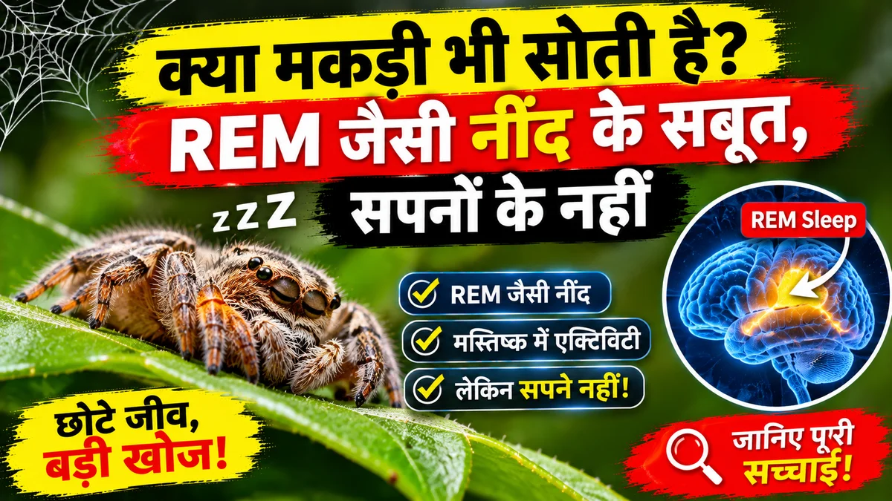
क्या मकड़ी भी सोती है? REM जैसी नींद के सबूत, सपनों के नहीं
PNAS के नए अध्ययन में जंपिंग स्पाइडर Portia fimbriata की रात की नींद दो चरणों में बँटी दिखी, पर सपनों का सबूत नहीं मिला। प्रयोग, आँकड़े, सीमाएँ और भारत का पहलू पाँच सवालों में।
पूरा लेख पढ़ें →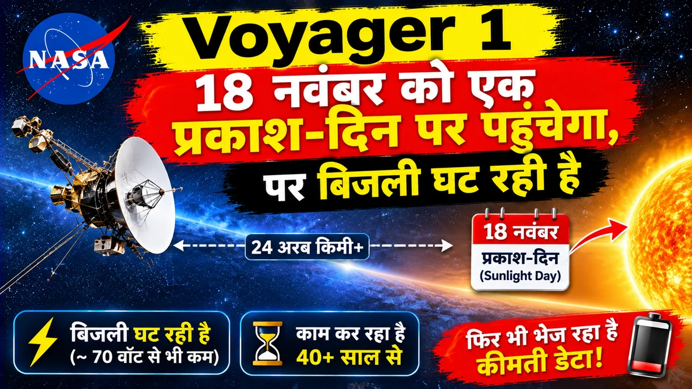
Voyager 1 18 नवंबर को एक प्रकाश-दिन पर पहुंचेगा, पर बिजली घट रही है
NASA के अनुसार Voyager 1 18 नवंबर 2026 को पृथ्वी से एक प्रकाश-दिन, यानी करीब 25.9 अरब किमी दूर होगा। चार भ्रम, घटती बिजली, 48 घंटे का संदेश-चक्र और मंगलयान से तुलना।
पूरा लेख पढ़ें →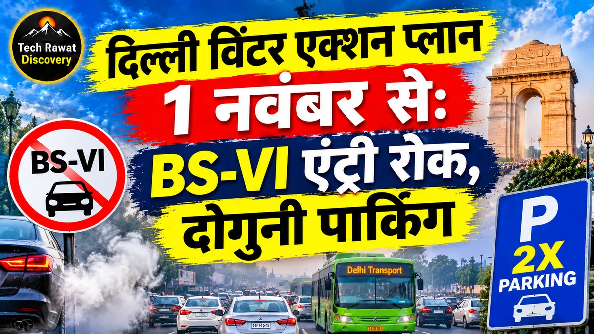
दिल्ली विंटर एक्शन प्लान 1 नवंबर से: BS-VI एंट्री रोक, दोगुनी पार्किंग
दिल्ली विंटर एक्शन प्लान 1 नवंबर से 28 फरवरी तक चलेगा। बाहरी non-BS-VI वाहनों की रोक, दोगुनी पार्किंग, निर्माण पाबंदी और GRAP से फ़र्क, तारीख़ों की तालिका के साथ।
पूरा लेख पढ़ें →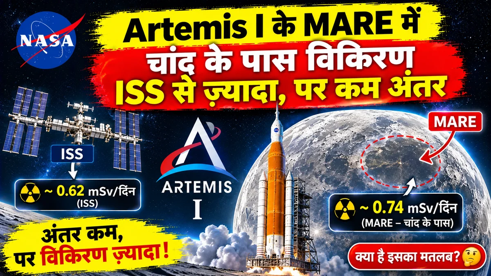
Artemis I के MARE में चांद के पास विकिरण ISS से ज़्यादा, पर कम अंतर
Artemis I के MARE प्रयोग के अनुसार चांद के पास कुल विकिरण ISS से ऊंचा है, पर उतना नहीं जितना अंदाज़ा था। ISS बनाम चांद की आमने-सामने तुलना, 731, 523 और 1,369 μSv के आंकड़े, और भारत का पहलू।
पूरा लेख पढ़ें →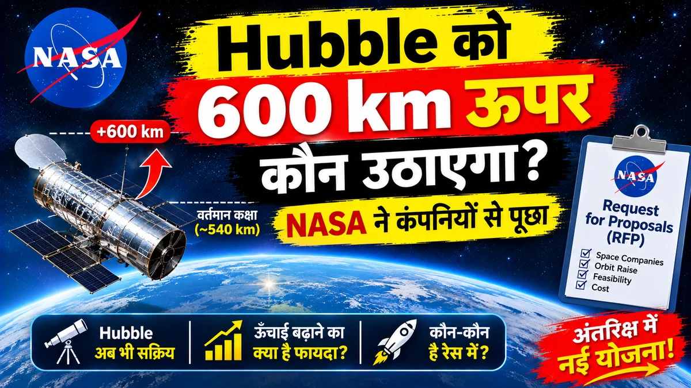
Hubble को 600 km ऊपर कौन उठाएगा? NASA ने कंपनियों से पूछा
NASA ने 29 अक्टूबर 2026 को Hubble reboost और servicing पर कंपनियों से जानकारी माँगी। जानिए पकड़ने से ऊँचाई बढ़ाने तक का काम कैसे होगा और भारत के लिए इसका क्या मतलब है।
पूरा लेख पढ़ें →
TRAI के AI मसौदे में जवाबदेही सख़्त, पर रिपोर्टिंग की समय-सीमा खुली
TRAI के मसौदे में टेलीकॉम में AI के नियम कंपनी की मेज़ तक आए: बोर्ड-मंज़ूर नीति, जोखिम-वर्ग और घटना-रिपोर्टिंग। 2023 की सिफ़ारिश से तुलना और भारत पर असर, पर समय-सीमा खुली है।
पूरा लेख पढ़ें →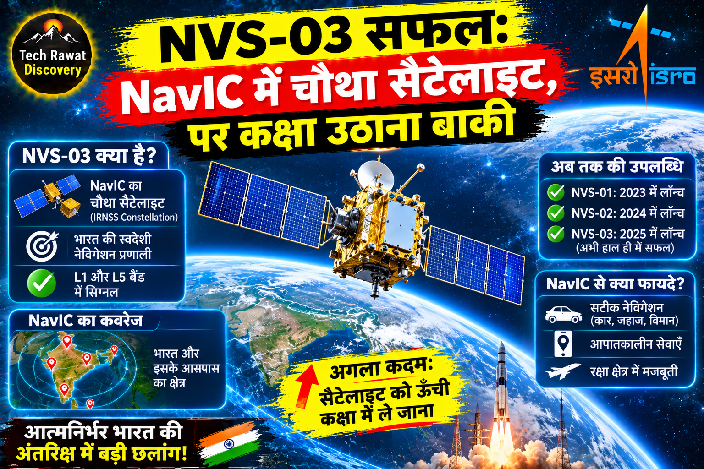
NVS-03 सफल: NavIC में चौथा सैटेलाइट, पर कक्षा उठाना बाकी
GSLV-F18 ने NVS-03 को GTO में पहुँचाया और ISRO के अनुसार NavIC चार सैटेलाइट पर लौटा। NVS-02 से तुलना, आम यूज़र पर असर और जो अभी तय नहीं।
पूरा लेख पढ़ें →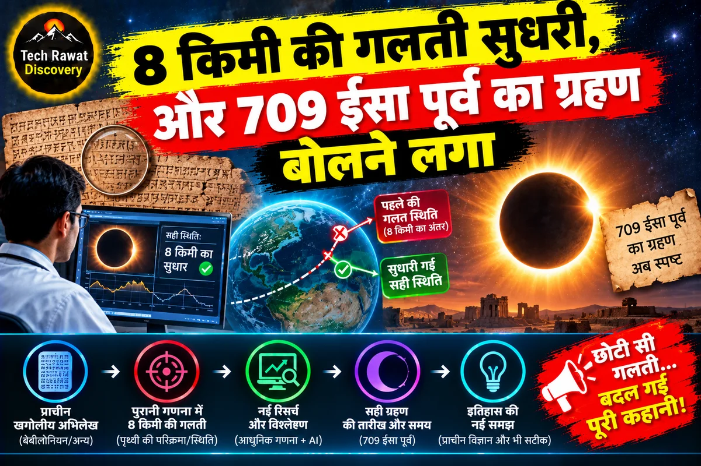
8 किमी की गलती सुधरी, और 709 ईसा पूर्व का ग्रहण बोलने लगा
Nagoya की टीम ने प्राचीन Qufu की 8 किमी की गलती सुधारकर 709 ईसा पूर्व का सूर्यग्रहण फिर बनाया और धरती की रफ़्तार पर बेहतर बंधन निकाले। पहले बनाम अब, कोरोना की अनिश्चितता और भारत का पहलू।
पूरा लेख पढ़ें →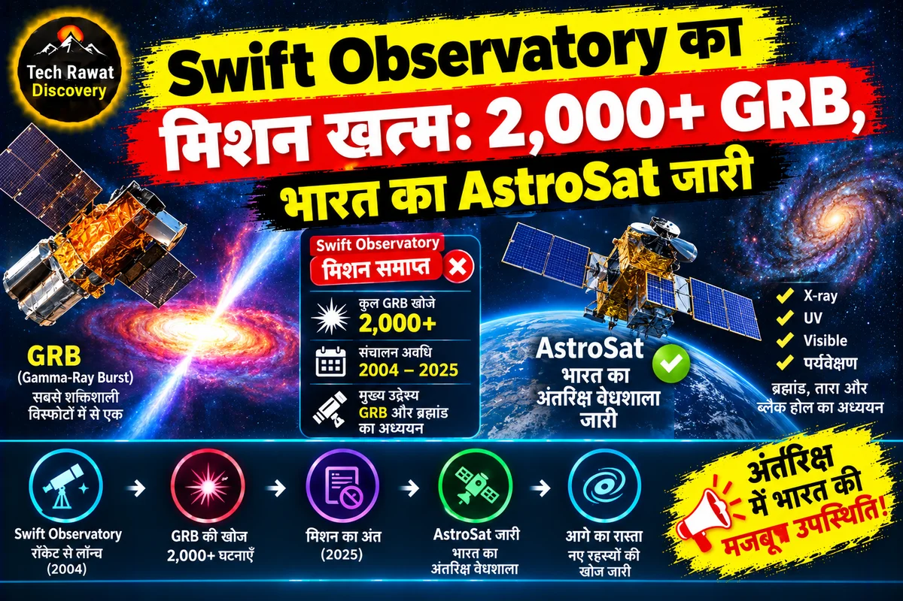
Swift Observatory का मिशन खत्म: 2,000+ GRB, भारत का AstroSat जारी
NASA ने 23 अक्टूबर 2026 को Swift telescope का मिशन खत्म किया। बचाव कोशिश नाकाम रही। gamma-ray burst की निगरानी में भारत के AstroSat की जगह क्या है?
पूरा लेख पढ़ें →